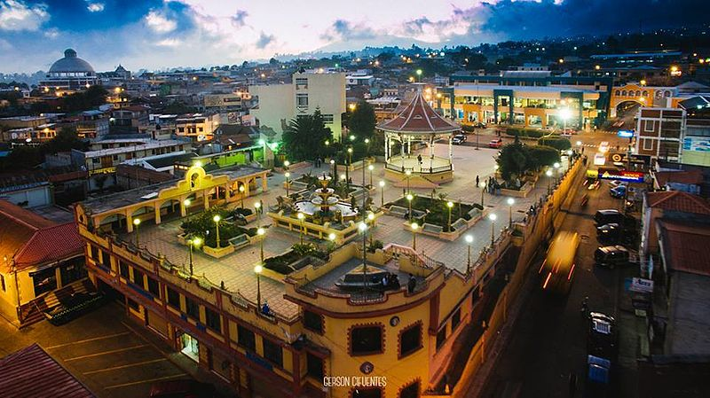
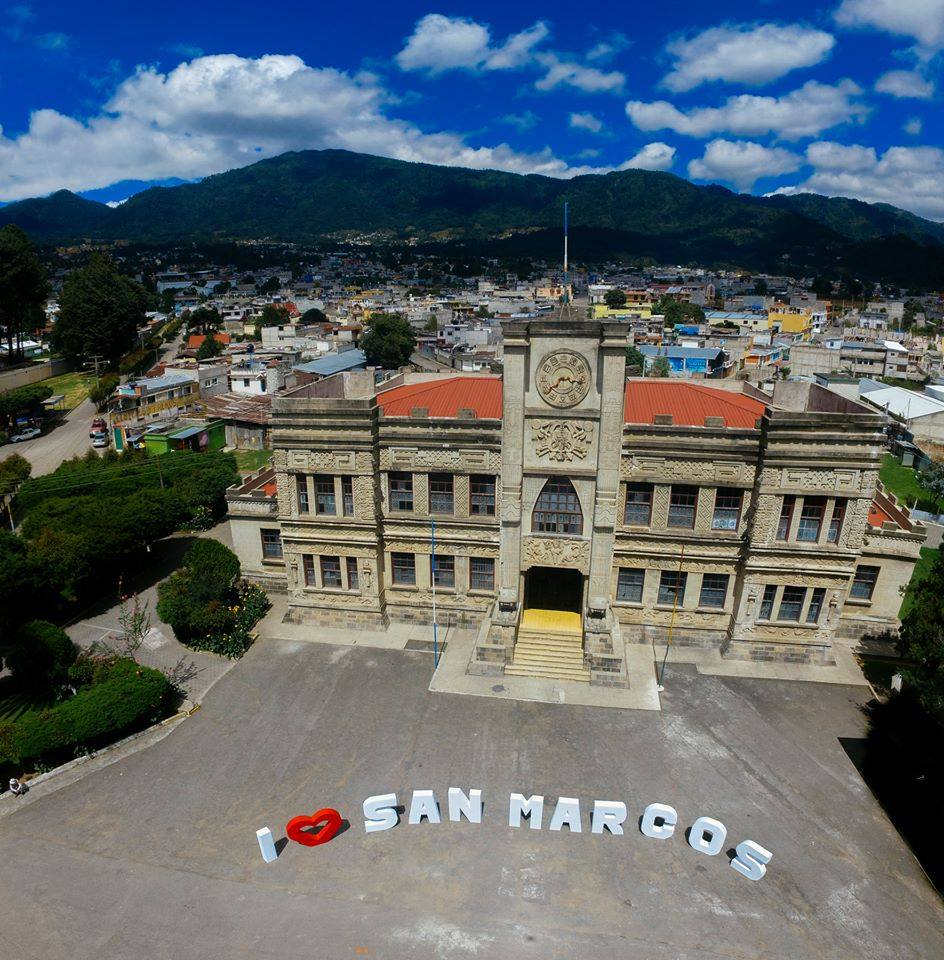
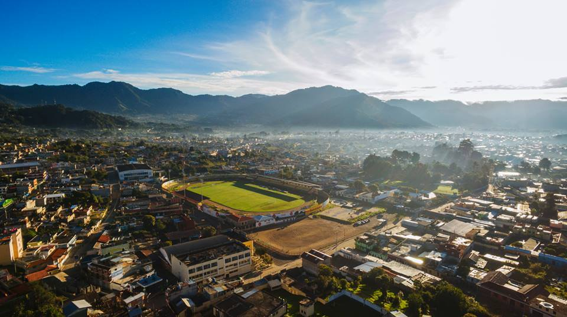
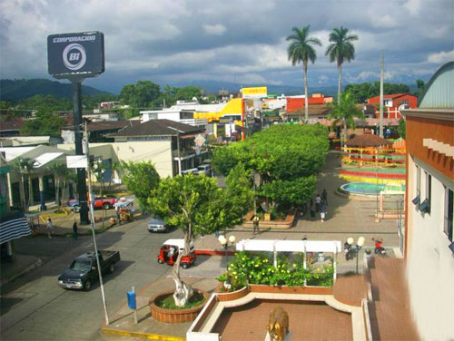
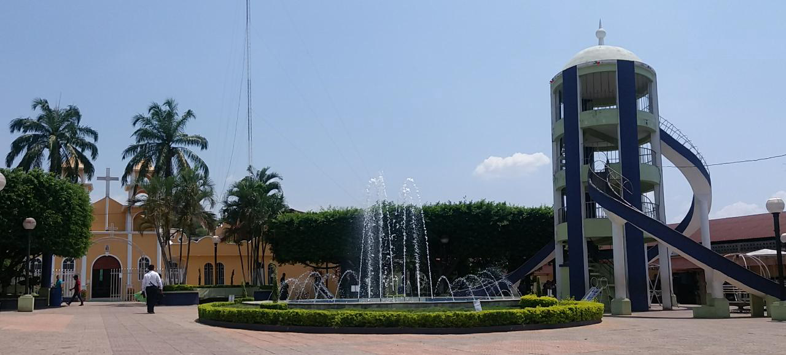
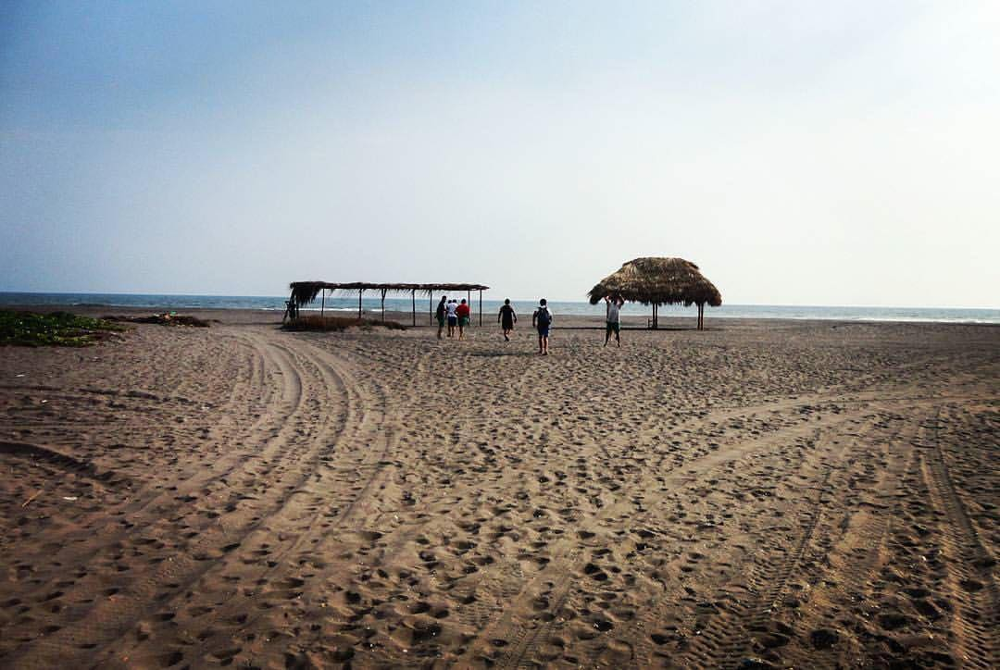
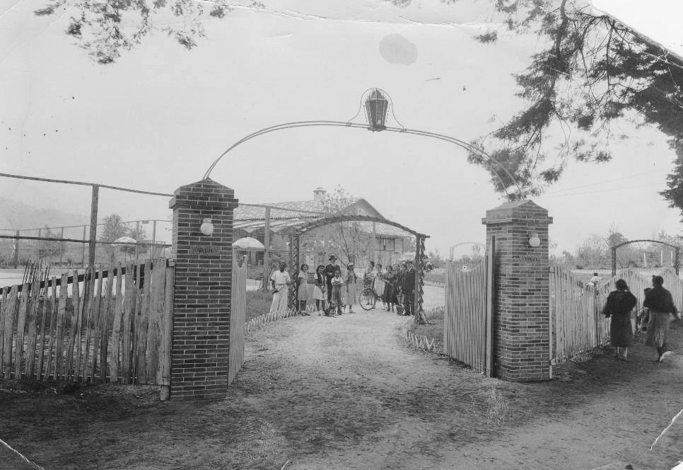
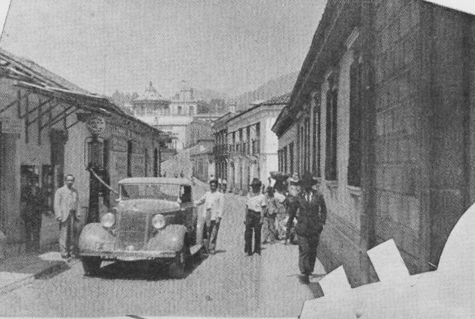
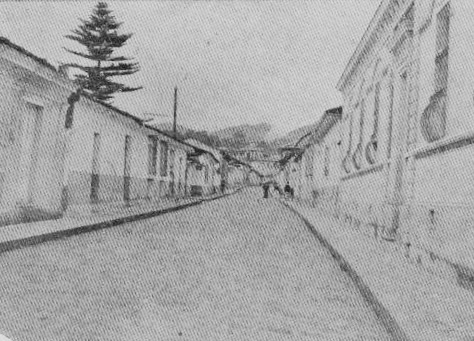

GALERÍA DE FOTOS
Parque central de San Marcos |
Palacio Maya |
Departamentos de San Marcos |
Parque central de Malacatán |
Municipio de Catarina |
Playa de Ocos |
Feria de Primavera de San Marcos, 1940. |
Feria de Primavera de San Marcos, 1940. |
San Marcos, 1940. |